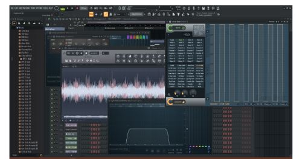

I like a lot listen Music thats why I tried to understand how we can create music, how the human bein was able to play instrument and recording them so thats the reason why I always try to make some instrumental music with different software and I going to show you one of the last projects that Ive been working.
